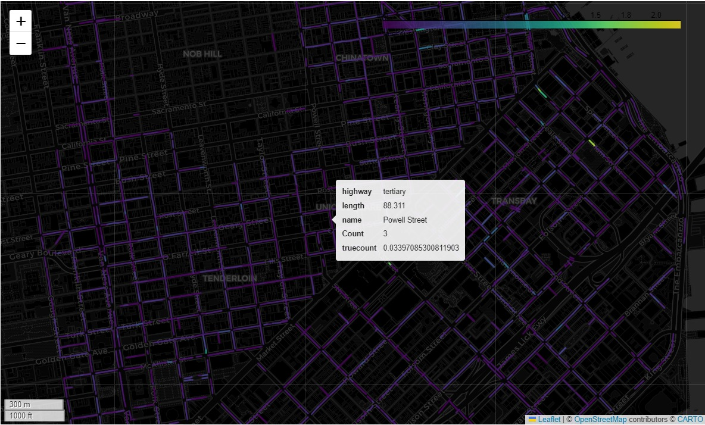
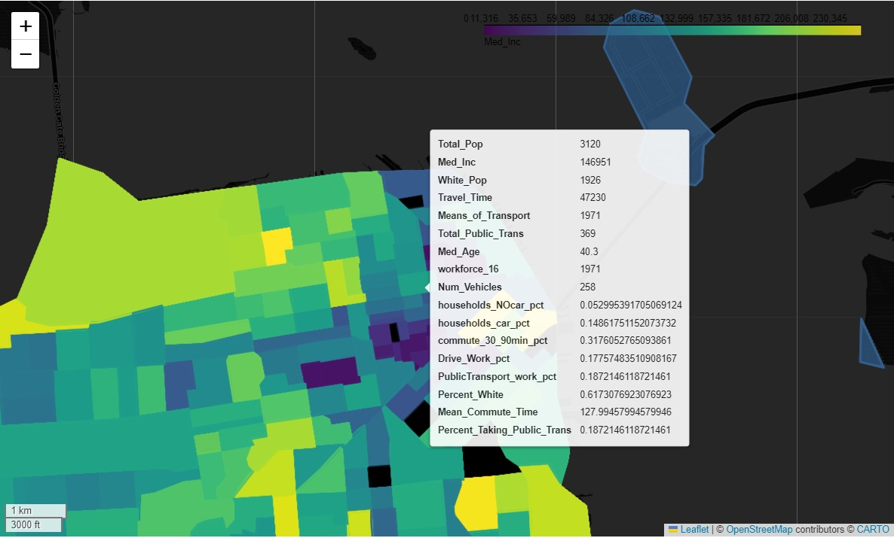
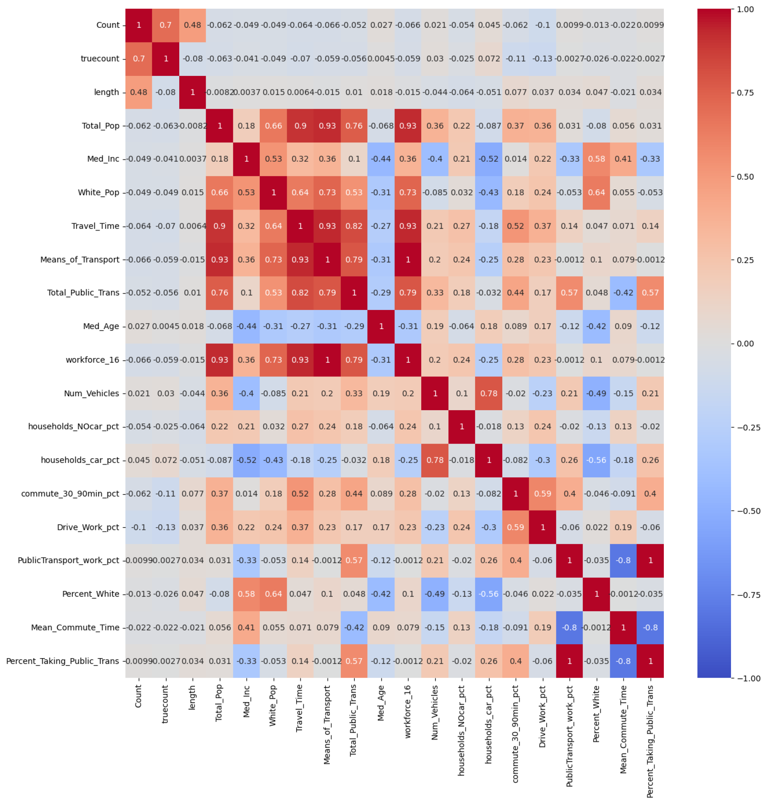
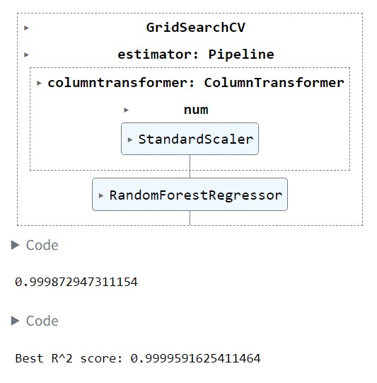

Project Brief
For interactive visualizations, visit the full analysis.
San Francisco grapples with persistent challenges in its parking landscape, characterized by limited availability and high demand. The city’s densely populated neighborhoods often experience a shortage of parking spaces. These shortges are also reflective of certain social and demographic patterns in the city, as we have uncovered in this research.
In response to these difficulties, the use of parking apps has gained prominence, offering real-time information on available spaces and facilitating a more efficient navigation of the city’s intricate parking network. Increasing the efficiency of such apps could be a significant use case of this analysis.
This project aims to utilize San Francisco’s open parking data to map and visualize parking availability, occupancy, and clustering trends within the city over the recent months/years and predict demand for parking across the city. The project process is outlined as:
1. Exploratory Analysis & Storytelling
We wanted to frame the parking demand and supply trends within the larger framework of demographic and social patterns in San Francisco. Using the census data (and possibly other sources with neighborhood-level information), we expected to identify associations between high and low-demand areas with variables such as race, income, and employment.

2. Main Analysis
By conducting spatial joins for the data collected from various sets, we aimed to present the patterns of occupancy and use over time for the given parking spaces. We also ran correlation tests to see factors influencing parking.


3. Predicitive Modeling
Using a Random Forest Model, we predict areas with high demand for parking using the factors defined in the previous step.

4. Data Visualization
We wanted to include interactive visualizations about parking demands and street networks comparing different San Francisco neighborhoods.